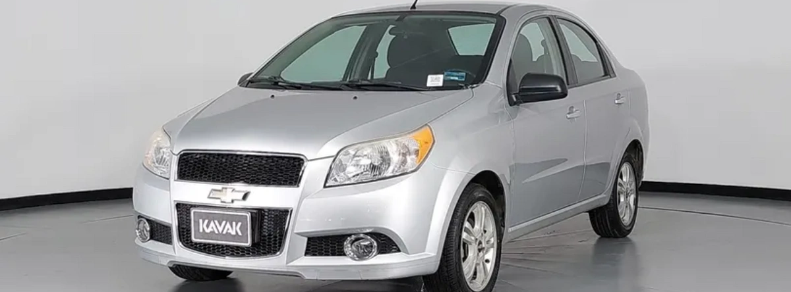

El chevy Monza es un carro muy padre, porque se basa en la plataforma del Opel Corsa modelo B.

Inicialmente fue introducido en Brasil en los 90's, para probar el mercado en ese país, y fue exportado a toda latinoamérica. pasando por argentina, en donde se exportó a México hasta que se nacionalizó su producción abriendo una ensambladora en Ramos Arizpe, Coahuila.

Tengo entendido que el méxico el modelo cambio de ser Opel Corsa B a llamarse Chevrolet Chevy Monza C1, que fue el que se hizo de 1994 al 2001. Luego se lanzó la versión C2, que según yo ya fue hecha en México. En 2005 se lanzó la C3 que duró hasta 2012 que es cuando la plataforma cmabió al Chevrolet Aveo, El cual fue una mezcla del Opel corsa D (llamado en México Chevrolet Corsa) y el G3 de la marca Pontiac
En conclusión, el Chevy Monza es un carro con una historia interesante y una evolución que refleja los cambios en la industria automotriz en México y Latinoamérica.
Fuentes: https://es.wikipedia.org/wiki/Chevrolet_Chevy_Monza https://es.wikipedia.org/wiki/Chevrolet_Aveo